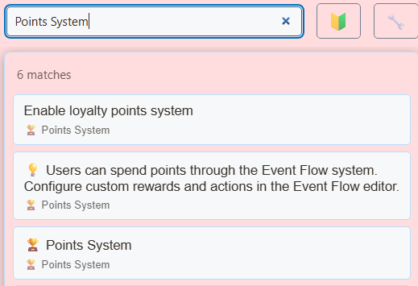

1. Enable participation points


- Open SSN’s Global settings and tools → Points System. Lülitage sisse Enable loyalty points system.
- Start with Points per engagement: 1 ja Engagement window (minutes): 15, then adjust to suit your stream.
- Enable !points, !leaderboard, ja !rewards commands if you want those chat replies.
- Keep SSN and the source chats capturing. Ask a test viewer to send a normal message, then inspect Manage User Points.
Points reward captured participation, not silent viewing time or every message. After an award, the viewer needs a later qualifying message outside the engagement window to earn again. Participation streaks can add bonuses. Repeated messages inside the same window do not repeatedly award points.
- Participate Captured chat activity
- Earn Eligible engagement window
- Redeem Balance and cooldown checks
- Kuvamine Connected reward overlay
2. Check and manage balances
Viewers use !points for their balance and !leaderboard for rankings when enabled. Replies require a source that can post back to chat; if no reply arrives, check the balance through Manage User Points before assuming no points were earned.
!points shows the available balance, earned points, spending and reservations. !leaderboard and the loyalty leaderboard rank and display total earned points. Redeeming a reward reduces the available balance; earned-point rankings reflect the total earned.
Kasuta Manage User Points for a specific viewer and platform, or View Leaderboard for an overview. Accounts are keyed by username and source type: matching names on Twitch and YouTube have separate balances. Do not assume a viewer’s accounts are automatically linked.
3. Offer a sticker reward
- sisse Points System → Sticker rewards, enable sticker rewards and choose the packs you want available. Set a point price suited to your earning rate.
- Copy the OBS browser source link into OBS and keep the sticker source loaded.
- sisse Timing & chat replies, set the display time, per-viewer cooldown, per-sticker cooldown, and quiet gap. Enable command replies if desired.
- Have a test viewer type
!stickersto list enabled sticker codes and prices, then!sticker rocketif that code is enabled and affordable. - Check the displayed sticker and remaining balance before announcing the reward.
Approval happens when you choose the catalog. Enabled stickers redeem automatically; there is no per-redemption approval queue. For custom images or GIFs, you supply and approve the direct HTTPS asset URL. Viewers cannot submit arbitrary artwork through the sticker command.
A cooldown or offline overlay rejects the request without spending points. If display delivery fails after spending, SSN attempts a refund and reports failures that need a host correction. A connected overlay does not prove that OBS currently shows its scene.
Vt Sticker packs and setup for previews, custom artwork, and GIF choices. !stickers is the sticker catalog command; !rewards lists the general points reward commands.
4. Add optional Event Flow rewards
For custom actions, use the existing Event Flow editor and its Spend Points action. Put your exact command condition before spending, set Amount to Spend, and connect the paid action after a successful spend. Include a cooldown in the flow.
Test both an insufficient balance and a sufficient balance before enabling a reward. A custom action that fails after charging does not automatically inherit the sticker system’s delivery/refund behavior. Review failure handling before attaching paid commands to media or external actions. See Event Flow.
5. Preserve points across moves
Points live in local browser/app storage. Sharing a session ID with another computer or installation does not synchronize balances.
- Kasuta Points System → Backup & Restore → Export Points and retain the JSON file.
- On the destination installation, export any existing points first, then use Import Points and select the intended import mode.
- Choose carefully: Merge keeps higher point values; Replace overwrites the existing points data. Review the import result, spot-check viewers and platforms in Manage User Points, and confirm balances before resuming rewards.
Keep a dedicated points export alongside your settings backup. Reset All Points clears the points ledger; use it only for an intentional reset after exporting.
Tõrkeotsing
- Balance stays unchanged: check capture, the master switch, the engagement window, and the viewer’s platform account.
- Chat history disabled: points earning and points commands depend on the local message database. See the chat history guide.
- Sticker says unavailable: check pack/code selection, sufficient funds, cooldowns, and the loaded OBS sticker source.
- Points missing after a move: import the points export into the installation doing the capture; a session link alone is not a backup.